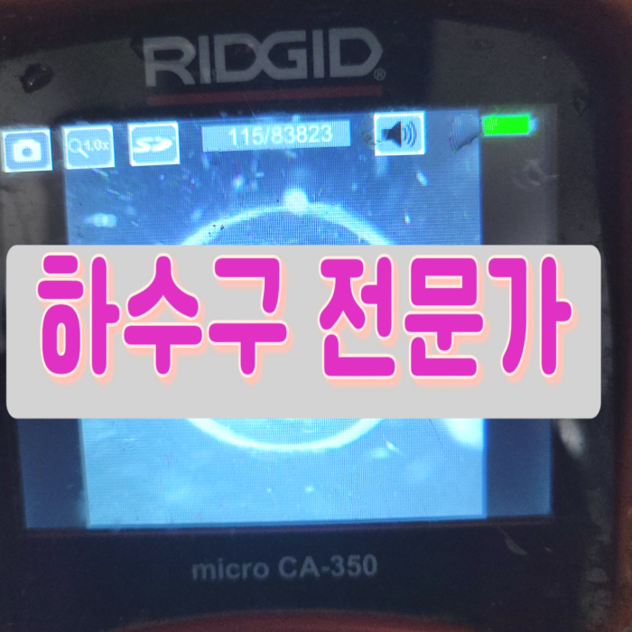
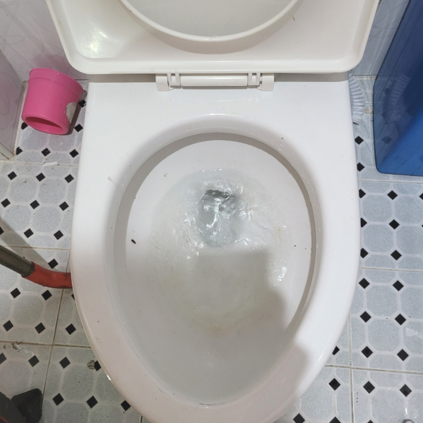
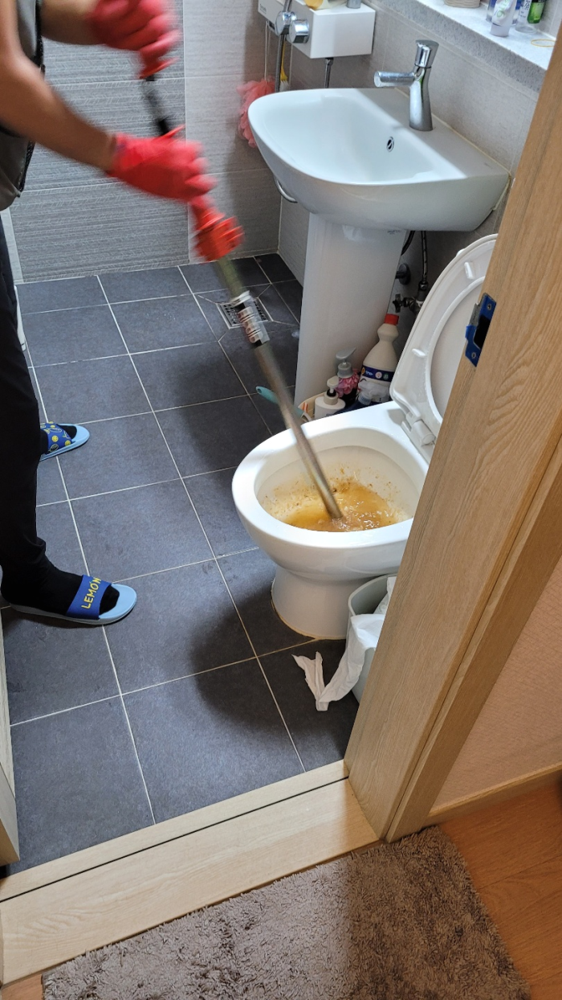
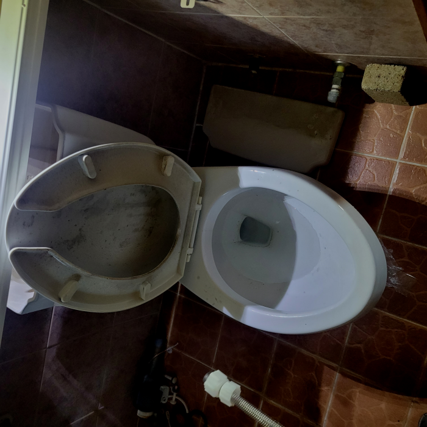
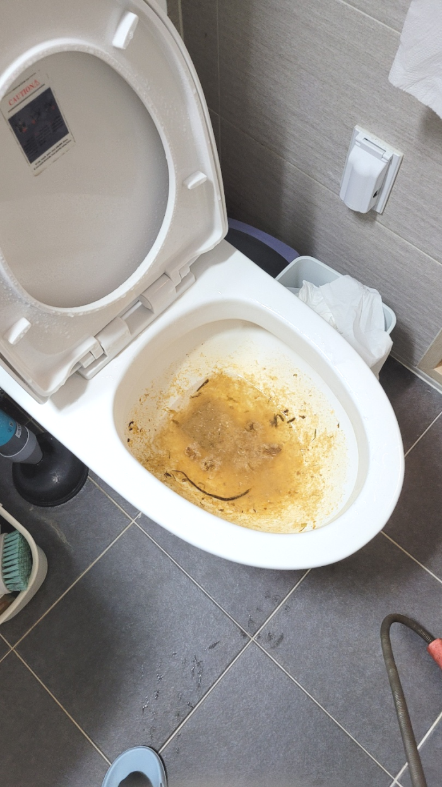
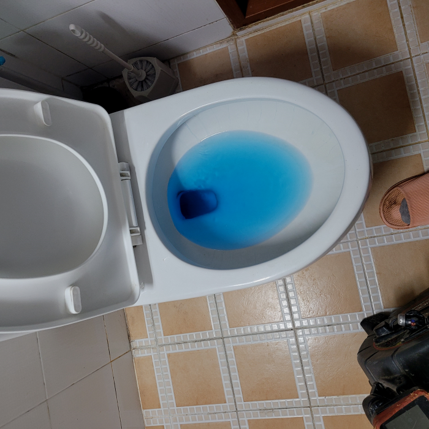
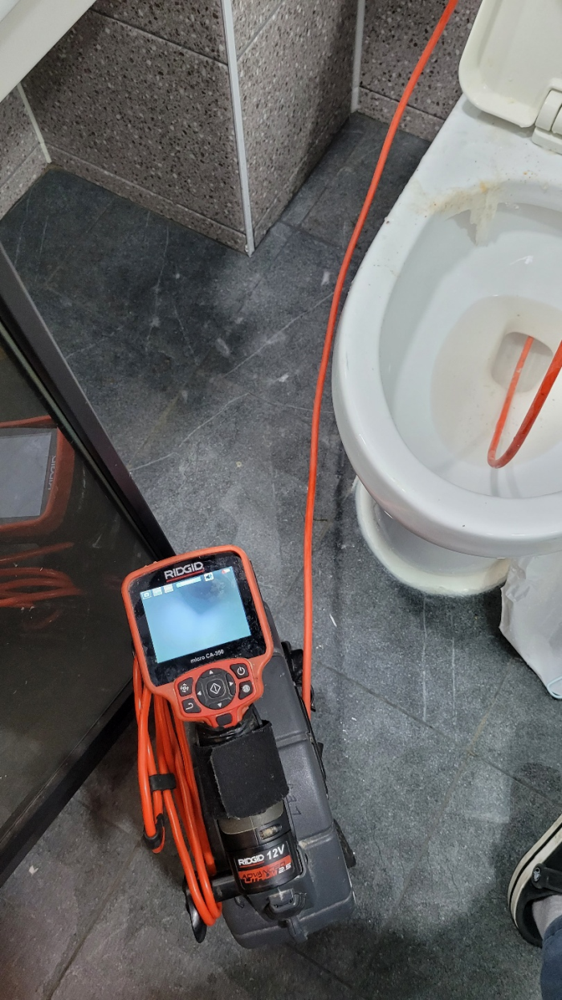

🏠 덕양구 대변기막힘 원당동 용두동 변기역류 하수구뚫는업체
용인 싱크대막힘 전문 시공 후기

📋 작업 개요
- 위치: 용인
- 서비스 유형: 싱크대막힘, 변기막힘, 하수구막힘, 배관막힘, 누수수리, 역류해결, 뚫는업체, 배관청소, 고압세척, 설비공사
- 작업 일시: 2024. 1. 15. 19:57
- 업체명: 하수구수사대 (010-5615-2118)
🔍 문제 상황
안녕하세요^^
설비전문업체 "하수구수사대"를 찾아주셔서 감사합니다^^
누구나 한번쯤은 배출구 막혀 난감하셨던 경험이 있으실 겁니다. 배출구가 막혔을때 처음에는 직접 셀프로 뚫수도 있는 방법에 대해 알아보고 시도하는 분들이 많으십니다.
만약 배수구배관 이물질이 없다면 작업할 곳에 약 5cm의 오차 범위 내에서 정확한 위치 파악이 가능합니다. 위치를 파악하고서는 바로 작업을 시작하지요. 이물질로 가득했던 배관에 물길을 터주기 위한 작업을 진행했는데요, 타공을 할 때에는 배수구배관 상태를 고려해야 한답니다.
덕양구 대변기막힘 원당동 용두동 변기역류 하수구뚫는업체

🔎 원인 분석
💡 전문가 진단: 덕양구 대변기막힘 원당동 용두동 변기역류 하수구뚫는업체
다가구 건물에서의 좁은 하수도배관의 경우, 샤프트기를 이용하여 배관 내부의 찌꺼기를 제거하는 것이 중요합니다. 미생물이 번성하여 이물질을 제거하고 하수도배관을 철저히 청소해야 합니다. 하수도 문제는 놓치게 되면 상황이 악화될 수 있으므로 빠른 대처가 필요합니다.
전문적인시공능력과 그에맞는퇴수구장비 이부분을모두 채워줄수있는업장에 공사진행요청하는것이 합리적입니다. 퇴수구막힘이 발생한 원인지점에 사용가능한 장비를소지하고 믿을수있는인력들이 지역을망라하여 내방해드립니다. 어려운현장이라도 거절하지않고 방문드리고있습니다.
대부분의 이물질은 기름때로 인해 생기지만 물티슈,머리카락 등등 다향한 이물질 또는 노후된 배관으로 인해 문제가 되는 경우도 있어서 장비와 실력이 출중한 배관전문업체를 통해서 해결해 보시기 바랍니다.
막힘 증상은 느닷없이 발생된 것은 아니고 막힘의 전조증상이 보이면서 심각한 배출관막힘으로 전환이 되는 것입니다. 의뢰인께서 배출관막힘을 인식 못하셔서 줄곧 이용을 하다가 오물 덩어리가 배관으로 흘러 들어가 쌓이면서 심한 막힘이 나타나는겁니다.
저희는 오랜 경력과 노하우를 통해서 전문 장비를 가지고 작업을 해결하고 있는 곳인 만큼 퇴수 막힘이 발생을 하게 되면 고객과의 빠른 상담을 한 후에 방문을 진행해 드리고 있습니다. 우리가 무심코 매일 사용을 하고 있는 퇴수배관은 잠시만 막히게 되더라도 아주 불편한 상황이 발생하게 될 수밖에 없는데요.
게다가 악취까지 발생하고 있는 상황이었기에 신속한 대처가 필요했습니다. 보다 정확하게 원인을 알아내고자, 트랩을 열어 배관을 자세하게 확인해 보았는데요. 직접 확인하기 어려운 부분은 배수 배관 내시경 장비를 사용하여 확인했습니다.

🔧 작업 과정
하수구가 막히는 원인은 다양한데요. 쓰레기나 휴지, 기름때, 그리고 여러 찌꺼기 등으로 배수관가 막히게 돼요. 그러므로 사전에 이러한 부분들 주의해 주시는 게 좋을 것 같습니다.
배수막힘을 스스로 뚫을때 대표적인 민간요법으로 알려진 방법 중에 하나로는 옷걸이를 이용하는 방법이 있는데요. 옷걸이를 길게 늘어트린 다음 깊숙하게 집어넣어 배수막혀있는 이물질을 안으로 밀어 넣는 방법입니다. 다음으로는 약품을 넣는 방법이 있죠.
갑자기물샘증상이 나타는게 하수도라서 1년동안은 당연하고 24시간언제든지 응대하고있어요. 배출관막힘 급하시다면 무슨상태이든지 신속하게내방하는곳이 간절할수밖에없어요.
배수관청소가 끝난 뒤에는 다시 내시경 카메라를 사용해서 배관에 남아있는 이물질이 없는지 배수관배관이 파손된 곳은 없는지 꼼꼼히 확인해 줄 수 있습니다. 필요한 경우 마무리 작업을 진행하면서 수전이나 주름관 등 소모품을 교체해 드리기도 합니다.
단순히 하수 뚫고 얼마 지나지 않아서 다시 막히는 경우도 종종 있는데 그럴 땐 기름들이 하수배관에 단단하게 박혀 있어 좁아진 배수관으로 물이 시원하게 흘러나가지 못하고 역류하기 때문에 이럴 땐 하수고압세척으로 배관세척을 하시는 것이 매번 뚫는 하수관 청소보다 훨씬 효과적입니다.
이번 현장은하수관 통수가 잘 이뤄지지 않다 보니 오물이 위로 올라와 물이 차있는 형태여서 일단 위쪽에 올라온 오물과 함께 이물질들을 석션 장비로 흡입했습니다.
어떤 배수구 작업에서든 시원찮은 장비가아니라 배수관전체 고착화된것들을 긁어내주는 플렉스샤프트와 고압등으로 맡기실때도 군더더기없게 만들고있습니다. 이런부분들은 경력이있기에 모든과정에서 깔끔할수있는거죠. 배수구배관에 남아있는것 없이 싹 뚫게된다면 석회들이 뭉치는데까지 훨씬긴시간이 걸리게되어 재발생의 가능성도 적습니다.
이 작업에는 플렉스 샤프트라는 장비를 사용하는데, 이 장비는 체인이 붙어있고, 그 체인이 빠르게 회전하면서 배관 크기에 맞는 크기로 펼쳐지게 됩니다. 그러면서 석회덩어리를 잘게 깨트리고, 안쪽을 털어내면서 퇴수를 새 배관처럼 깨끗하게 청소할 수 있는 장비이지요.


✅ 작업 완료
구석구석 살펴본 뒤 조치하지 않으면 기름때들은 쌓이기만 하면서 예상치 못한 증상까지도 만드는 것입니다. 이렇기 때문에 배수관작업을 하게 되면 어떤 현장이든지 전체 구간 세척작업하고 있습니다.
하수관 관련된 곳이라면 무엇이든 도맡아 하고 있으니 늦어지기 전에 막힌 배수관을 뚫어내고 싶으신 경우 밤낮없이 대기 중이니 통화 걸어 주시면 친절하게 맞이해 안내해 드립니다.
#하수구막힘 #하수구뚫음 #하수구역류 #씽크대막힘 #싱크대역류 #오수관막힘 #하수구청소 #욕실하수구막힘 #변기막힘 #하수구뚫는비용 #싱크대수리 #화장실막힘




⚠️ 베란다 누수 및 방수 관리 방법
- ✅ 비가 많이 올 때 창틀 주변이나 아래층 천장에 얼룩이 생기는지 정기적으로 확인해 보세요.
- ✅ 우수관 주변 실리콘 마감이 들뜨거나 깨진 틈새가 있는지 손상 여부를 수시로 체크하세요.
- ✅ 베란다 바닥 타일의 줄눈(메지)이 소실되면 그 틈으로 물이 침투하여 누수가 유발됩니다.
- ✅ 누수 의심 증상 발견 시 방치하면 아래층 손실이 커지므로 즉시 전문가의 진단을 받으십시오.
💡 핵심 정리
- 확실한 장비 작업(내시경 점검 및 샤프트 스케일링)으로 원인을 뿌리 뽑습니다.
- 작업 후 1년 이내에 동일한 부위 재발 시 100% 무상 A/S 서비스를 보장합니다.
- 서울 · 경기 · 인천 전 지역에 24시간 언제든 긴급 출동할 수 있도록 항시 대기 중입니다.
❓ 자주 묻는 질문 (FAQ)
🚨 용인 싱크대막힘 문제로 고민이신가요?
정확한 원인 진단과 확실한 시공으로 재발 없는 해결을 약속드립니다.
24시간 긴급 출동 | 서울 · 경기 · 인천 전지역 | 1년 내 재발 시 무상 A/S